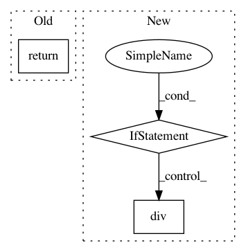

233f859f7218e31357d05aa8c3752dc552197130,dask_ml/preprocessing/data.py,MinMaxScaler,inverse_transform,#MinMaxScaler#Any#Any#Any#,115
Before Change
X[column] = _X[column]
return X
else:
return _X
class QuantileTransformer(skdata.QuantileTransformer):
Transforms features using quantile information.
After Change
"Call "fit" with appropriate arguments before "
"using this method.")
X = X.copy()
if isinstance(X, dd.DataFrame):
X = X.sub(self.min_)
X = X.div(self.scale_)
else:
X -= self.min_
X /= self.scale_
return X
class QuantileTransformer(skdata.QuantileTransformer):
In pattern: SUPERPATTERN
Frequency: 3
Non-data size: 3
Instances
Project Name: dask/dask-ml
Commit Name: 233f859f7218e31357d05aa8c3752dc552197130
Time: 2017-10-30
Author: TomAugspurger@users.noreply.github.com
File Name: dask_ml/preprocessing/data.py
Class Name: MinMaxScaler
Method Name: inverse_transform
Project Name: cornellius-gp/gpytorch
Commit Name: 6ff31af0d8af54c6b3c853cdc37281d635b84637
Time: 2018-05-22
Author: gpleiss@gmail.com
File Name: gpytorch/lazy/added_diag_lazy_variable.py
Class Name: AddedDiagLazyVariable
Method Name: _preconditioner
Project Name: cornellius-gp/gpytorch
Commit Name: 3cc5d3d7e88d812280ca927a328cef8f1cb6e9a3
Time: 2019-07-16
Author: gardner.jake@gmail.com
File Name: gpytorch/mlls/variational_elbo.py
Class Name: VariationalELBO
Method Name: forward